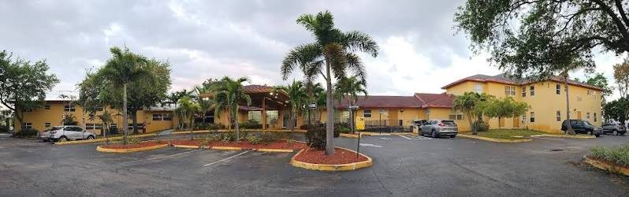

Good Hope Manor
Quality Care Without Compromise
Where Comfort Feels Like Home
Good Hope Manor is a family owned and operated assisted living community in Oakland Park, Florida, dedicated to providing personalized support, comfortable living, and quality care for our residents.
Our long-tenured team brings experience, familiarity, and consistency to the daily lives of our residents. We believe that caring for someone means knowing them, respecting their individuality, and creating an environment where they can feel comfortable, valued, and at home.
Assisted Living Facility License #8627

Good Hope Manor
Quality Care Without Compromise
Where Comfort Feels Like Home
Good Hope Manor is a family owned and operated assisted living community in Oakland Park, Florida, dedicated to providing personalized support, comfortable living, and quality care for our residents.
Our long-tenured team brings experience, familiarity, and consistency to the daily lives of our residents. We believe that caring for someone means knowing them, respecting their individuality, and creating an environment where they can feel comfortable, valued, and at home.
Assisted Living Facility License #8627
Family Owned. Personally Committed.
At Good Hope Manor, caring for residents is personal.
As a family owned and operated community, we believe every resident deserves dignity, respect, compassion, and individual attention. Families should feel comfortable knowing that the people caring for their loved ones are committed to creating a welcoming and supportive environment.
Familiar Faces. Consistent Care.
Experience You Can Count On
Our long-tenured staff are an important part of what makes Good Hope Manor feel like home.
Familiar faces and experienced caregivers help create continuity in daily care and services while allowing meaningful relationships to develop between residents, families, and our team.
Personalized Assisted Living
Support Designed Around the Individual
Every resident is different. Our approach to assisted living begins with understanding each person's individual needs, preferences, abilities, and care plan.
Our team provides assistance with daily living and personal care while supporting dignity, comfort, independence, and quality of life.
Nursing oversight is available within the scope of assisted living services, and appropriate outside clinical services may be coordinated based on individual needs and applicable provider and insurance requirements.
Table-Service Dining
Good Food. Comfortable Dining. Thoughtful Nutrition.
Mealtimes are an important part of life at Good Hope Manor.
Our table-service dining experience provides residents with the opportunity to enjoy meals in a comfortable, welcoming setting while encouraging conversation and social connection.
Menus and dietary considerations are addressed according to residents' individual needs and care plans.
Where applicable, dietary planning is supported through appropriate professional dietary oversight.
More Than Care — It's Community
Life at Good Hope Manor includes opportunities to enjoy meals together, participate in activities, connect with others, relax in comfortable common areas, and celebrate everyday moments.
Activities are offered within the community and are designed to encourage engagement, social connection, recreation, creativity, and enjoyment.
Why Families Choose Good Hope Manor
Family Owned & Operated
Personal attention and a commitment to treating residents with dignity, respect, and compassion.
Long-Tenured Staff
Experienced caregivers and familiar faces provide consistency and continuity in daily care and services.
Personalized Support
Assistance is based on each resident's individual needs, preferences, abilities, and care plan.
Nursing Oversight
Nursing oversight is available within the scope of assisted living services.
Table-Service Dining
Comfortable dining and shared mealtimes are an important part of community life.
Meaningful Activities
Opportunities for recreation, social connection, creativity, and resident engagement within the community.
Recommended by Families
The Greatest Compliment Is a Family Recommendation
Many families discover Good Hope Manor through people who already know us.
Residents' families, community contacts, local healthcare professionals, rehabilitation providers, and others who have become familiar with our community often help introduce families to Good Hope Manor.
We are grateful for every family who trusts us with someone they love.
Testimonials and reviews published on this website are genuine reviews or statements provided by actual residents or families and are used only with appropriate authorization.
Conveniently Located in Oakland Park
Good Hope Manor is conveniently located in Oakland Park, making it accessible for families visiting from Oakland Park, Fort Lauderdale, and surrounding Broward County communities.
2251 NW 29th Ct.
Oakland Park, FL 33311
Quality Care Without Compromise
Choosing assisted living is an important decision.
At Good Hope Manor, our commitment is simple: provide quality care, personalized support, comfortable living, meaningful community life, and a team that treats residents with dignity and respect.
We invite you to come see our community and meet the people who make Good Hope Manor feel like home.
(954) 677-2900
Important Information About Services
Good Hope Manor is an assisted living facility. Services and accommodations are based on each resident's individual needs, assessment, care plan, applicable Florida licensing requirements, and service availability.
When additional clinical, medical, therapeutic, hospice, or other specialized services are needed, Good Hope Manor may coordinate with the resident's healthcare providers and appropriate outside service providers, as applicable.
Admission and continued residency are subject to the resident's needs, assessment, care plan, applicable regulations, and the facility's ability to safely meet those needs.
Assisted Living Facility License #8627
Our Photo Gallery
Inside Good Hope Manor
All photographs displayed on this website should be actual Good Hope Manor photographs.